A collection of design projects I have worked on outside of product design
Falcon Heavy
Motion Design Exploration
IBM Design Hive
SXSW Event Design
All Things X
Internal Culture Magazine
Experience
An overview of my recent design experience.
Product & Design Consultant
October 2016 - Present
In the IBM Cloud Garage in New York City, I lead Clients through Design Thinking workshops and apply Lean to new applications built with IBM Watson and IBM Blockchain.
Product Designer
June 2015 - September 2016
As part of IBM Cloud in Austin, I designed security and infrastructure offerings and functionality and helped create both visual and usability patterns for the design system.
BFA in Industrial Design
September 2009 - April 2015
I graduated from the Industrial Design program with my Bachelor's in Fine Art from Brigham Young University in Provo, Utah.
Industrial Design Intern
June 2014 – August 2014
While at Fahrenheit Design, I Worked closely with the Dell Enterprise designers, Austin-based startups, and on internal projects.
Industrial Design Intern
February 2014 – May 2014
I was involved in all parts of design process as the only intern on the Whirlpool Advanced Design Team in Chicago.
IBM is brought Bluemix and SoftLayer, its two largest cloud platforms, together to create IBM Cloud. This was a huge endeavor that would stretch over many months. My involvement was in a critical part that needed to get done first, identity migration.
Our team was responsible for the security services offered on the platform (Vulnerability Advisor, Key Protect) in addition to the core capabilities of the platform related to identity and access management.
Problem
Users that used both Softlayer and Bluemix had a different identity (and login credentials) for each platform and frequently got them confused.
This caused many users to unecessarily reset their password or contact customer support.
Users
As we conducted user interviews, we realized that the way our users thought about their user identity varied depending on if they started out on one platform or the other. We also learned that the way each user accesses the platform and manages their identity was different. In order to address this, we decided to create separate experiences so that we met each group's expectations.
Facilitation
Once we had identified the problems faced by each of our users I planned and facilitated two workshops with our product manager for the two platform teams. As a team we came up with ideas about how to target groups of users and provide a way fot them to migrate to a new identity that would work for both platforms.
Interface Design
As a design team we used the output from the workshop to start designing workflows and wireframes for the different experiences. We refined these by prototyping them and showing them to users before sharing them with the development team.
We found the most effective format for delivering designs to our teams was in a packet for a giving scenario. Each packet contained a diagram of the workflow, accompanying wireframes, and annotations throughout to describe the intended behavior. Ironically despite this whole initiative being about unification, the engineering teams requested different packets with their corresponding branding.
Outcome
Several of the experiences had been implemented just before I moved on to a new role. Through these experiences almost 30% of the users would migrate to a new identity.
The biggest problem we ran into was that users would forget that they had migrated to a new ID. Finding for a design solution to that would have been the next project I worked on!
Designing for Disability
Role: UX Designer
Type:Accessibility Hackathon
Duration: 1 Week
As part of my 3 months design bootcamp, I spent a week focussed on learning about accessibility in digital products. During this week we created a website that distilled important information for designers to design for accessibility. This website was build onto the existing IBM Design Language website.
Our Goal
Most IBM Designers and Developers aren't aware of the way physical disabilities impact a user's inteaction with their interface. How do we help encourage them to consider accessibility across all stages of product development?
Research Findings
We interviewed several designers and developers about their experiences with accessibility and we realized that depending on someone's domain maturity they had different needs. Someone with less maturity may see accessibility as a limiting factor or as an inconvenience. Someone with more maturity understands that meeting accessibility standards can help designers make a product that is easier for everyone to use.
Empathy
Those who do not see accessibility as a priority are usually lacking empathy for those that accessibility affects most, the disabled. Our solution should help instill empathy for those in need.
Best Practices
There are many designers and developers who are interested in creating accessible software but simply don't know how. Online references are often overwhelming so it was important to make the best practices available to them in a way that is curated to their understanding.
Examples
Everyone learns better when they can see examples of theories put into practice. We wanted to include examples in our project so that designer and developers could have a head start and potentially pull useful content from the site.
Designing for Empathy
As a team we only had one week to design and code our vision so we divided into smaller teams based on our research findings. I worked with a couple developers and a designer on the Empathy section. We knew going in that it is difficult to make people to feel empathy. This is especially true for disabilities because many of us have no experience similar to that of those suffering from disabilities. What we came to realize is that by augmenting the computer inputs (mouse, keyboard), we could allow visitors to experience what it is like to use the web with a disability. Based on some early tests we found that users who experienced these simulations were often surprised by the difficulty and became much more supportive of accessibility efforts.
Empathy
Presented to the National Council on Disability
The head of IBM Design Phil Gilbert, highlighted my teams work on empathy simulations during a presentation to the National Council on Disability. The video below is a short animation showing how the parkinson's simulation functioned. In the video you see the user start the simulation and then struggle to press the button in the center of the screen.
Risk Management
Role: Product Designer
Type: Incubator Project
Duration: 4 Weeks
IBM OpenPages solutions enable customers to manage risk and compliance initiatives, helping businesses to reduce loss, improve decision-making about resource allocation, and optimize business performance. Governance, Risk Management, and Compliance (GRC) are three pillars that work together to assure that an organization meets its objectives. I worked on a team with a couple developers, visual designer and design researcher. As a team we did not have any previous experience with risk management.
Governance
This is a broad term that refers to policies, processes, managerial mechanism, values, and culture of a company. In short, how a company is operated.
Risk
Risk management is predicting and managing risks that could hinder the organization to achieve its objectives.
Compliance
Compliance with the company's policies and procedures, laws and regulations, strong and efficient governance is considered key to an organization's success. Regulations. Standards. Policies. Procedures.
Our Goal
Business owners don't have the time or the expertise to research the GRC reports while they are trying to make decisions. Can we design a way for them to quickly understand, monitor, incorporate risk data into their decision process?
Domain Research
We set out to understand the domain and then to connect with the users who relied on OpenPages to do their job. The OpenPages team was looking to create a proof of concept application that would target the needs of business owners.
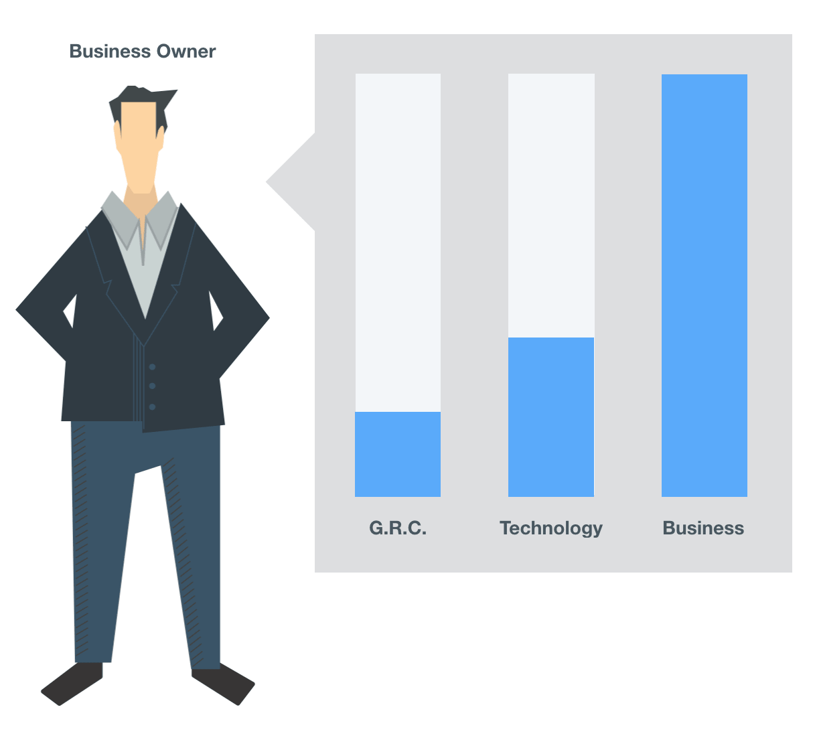
Business owners typically work with a risk professional to assess the impact of business decisions on the business' risk exposure, but communication and coordination can be difficult. As a result, many business owners make decisions without the insight that could be gained from GRC data. Part of the problem is that OpenPages applications were built for risk professionals and are difficult for business owners to understand and utilize.
We started the design process by tracking down risk professionals and business owners and interviewing them about their positions. The users we spoke to verified that communication between the risk professionals and business owners was difficult.
Initial Concepts and Testing
Based on this feedback and the research we did initially, we came up with three concepts. Each of concept takes a different approach to the problem and as we tested each one we discovered their strengths and weaknesses.
Concept 1: Librarian
Our first concept, titled "Librarian," was intended to encourage comparison of risk data to gather s into related metrics. This help some of the navigational problems that we heard about from risk professionals already using OpenPages but wasn't compelling enough to make business owners want to use the product.
Concept 2: Risk-o-Meter
The "Risk-o-Meter" concept excelled in many of the ways that our first concept did not. Business Owners loved the idea of an aggregated view of risk that they could check frequently without needing to search for relevant information. They also loved that trends could be visualized. But this concept lacked some of the detail that would be necessary to influence decision making.
Concept 3: Texting Plant
"Texting Plant" may be an obscure name, but this concept was also well received. The premise of this concept was to minimize the amount of time that the business owner needed to spend in the application and automate the mundane tasks involved with risk management. But this concept lacked an overall understanding of risk exposure. This turned out to be a major shortfall of this concept.
Final Concept
We pulled the best features of all of our previous concepts into our final, as well as some new insight into the way that business owners would like to view risk data. Business owners love to see the overall risk exposure of their business, but they also love to dissect that number. Risk Category, Line of Business, and Geography are their preferred breakdown of total risk exposure. We chose to make our concept a mobile application to make it always accessible to business owners.
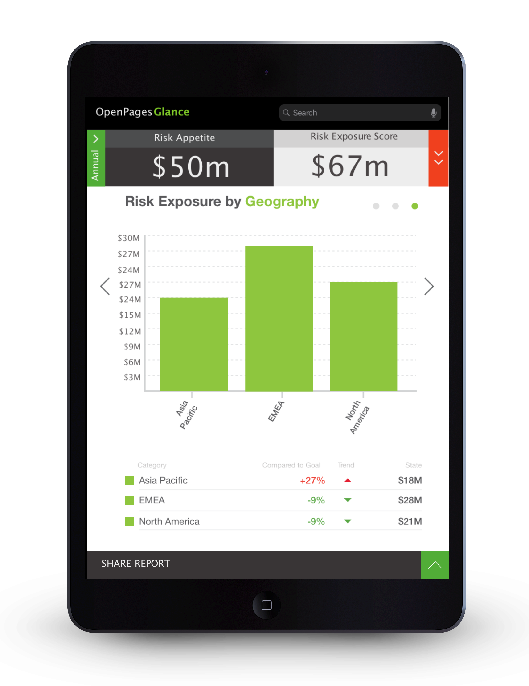
In our application the business owner can view the different breakdowns and when they see something they would like to investigate further they cal select that column and see a further breakdown. They can also view a history of that category's risk exposure, and even compare those levels to the levels of actual loss events.
Results
The product team was very excited by the work we presented. There was still a lot to be done to connect the prototype UI we built into their systems to support live data, but a team was created to pursue further development of this project and they have since released several version to their customers.
IBM Design Hive - SXSW
Role: Planning Committee Member
Type: Team Project
Duration: 5 Months
Design is a new force at IBM, but it's presence has had a huge impact on the rest of IBM as a company. People are often surprised to hear that IBM is embracing design to transform the culture of the business as a whole. They are especially surprised when they get the chance to visit and see the energy and flair that make up IBM Design and the IBM Studios. We wanted to capture the essence of that energy and bring it to SXSW so that visitors could get a glimpse of what it is like to be a part of IBM Design.
Goal
Create an event that is an expression of the emerging design culture at IBM. Allow attendees to experience what we do, how we do it, and who we are.
Creating the Vision
I was asked to help be part of a planning committee for the first IBM Design Hive, an event that would highlight the culture of the IBM Design studios. As a committee we decided that the event should feature experiences that blended digital and analog technology. This is not only representative of IBM's history as a company, but also a reflection of the strong craft culture of our studio.
We started brainstorming the experiences we wanted to build into the event. From our inspirational images several themes started to emerge. Energetic, Unexpected, Continuous, and Immersive were some of the words that resonated with the vision we had for the event.
We also created a basic style guide that would help us maintain some consistency as we brought in more people to create the different parts of the event. The use of unfinished woods was to reflect the way that IBM's transformation to a modern software company is still unfinished. The colors play off the bee theme and the hand-done type is an unexpected element for those familiar with IBM products.
Creating the Experiences
Tweet On a Typewriter
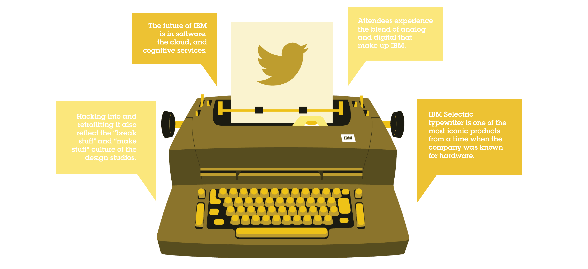
One of my main contributions to the final event was creating the idea and vision for the "Tweet on a Typewriter" experience. The concept drew from IBM's own history and played of the overall theme of blended analog and digital experiences. I worked with several engineers who took this concept and did the work to retrofit an IBM Selectric typewriter.
Signage
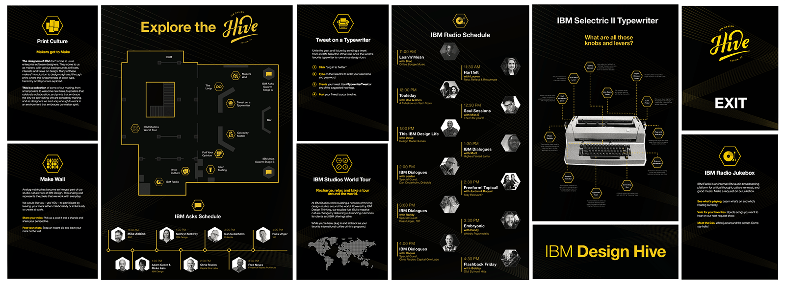
I was also responsible for creating signage throughout the event. There were a wide variety of needs from directional signage, to informational displays, and maps and schedules. This role required a lot of collaboration because it affected all of the different groups working on experiences.
Post-It Wall Construction
I also helped coordinate volunteers that helped construct the venue during the day preceding the event. The largest effort I helped coordinate was the post-it wall construction. It took a team of about 5 almost 6 hours to place over 4,500 post-it notes on the wall! The wall would gradually create an analog heat map as visitors pulled from the wall to leave feedback throughout the event.
The Event
The Event took place throughout the first day of SXSW. It featured speakers, interactive displays, live radio broadcast with interviews and music, data driven beer tasting, and an evening party that was featured in many articles as one of the top social events of that weekend!
Jon Iwata has an audience as he tweets from an IBM Selectric typewriter.
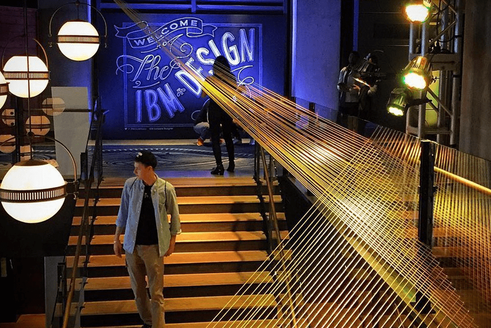
A string art installation led the visitors from the lobby of the hotel up to the venue floor.A print installation featuring posters made by IBM designers.The post-it feedback wall became an analog heat map as visitors responded to the prompt "Is privacy dead?"Several designers inspect the tweeting typewriter.An analog "pixel wall" allowed visitors to leave their mark by physically posting their photo on the wall.
Video courtesy of David Avila
Mini-Pulse Survey
Role: Product Designer
Type: Client Engagement
Duration: 2 Weeks
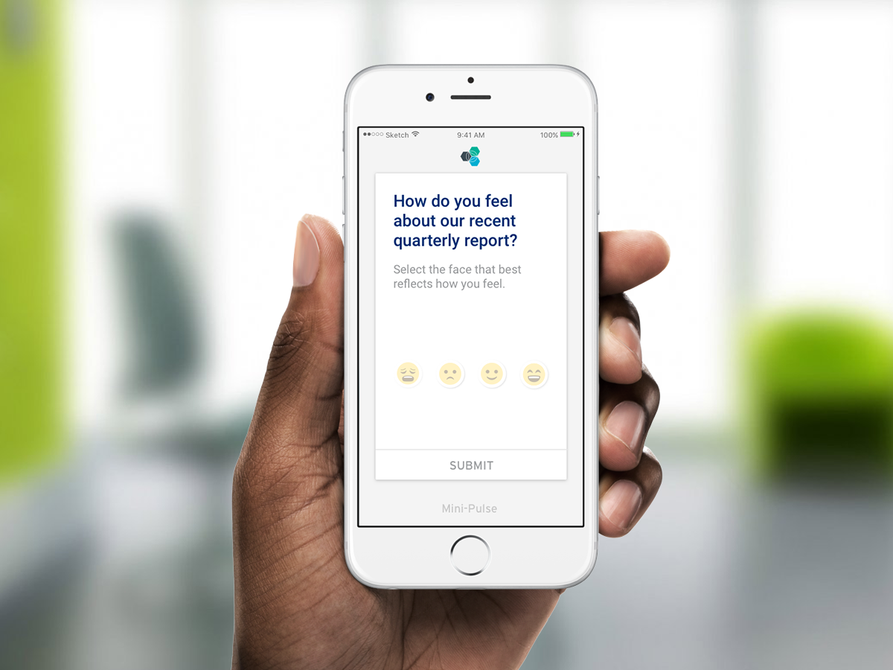
What I love abobut this project is that we were able to solve a real business problem for our client in only 2 weeks of development.
Problem & Opportunity
Gathering, analyzing, and applying employee feedback takes so long the findings are out of date by the time they are received. If management had a better way of collecting employee feedback, they improve retention and company culture.
Design Thinking Workshop
During our Design Thinking Workshop we identified users, pain points, and brainstormed what a solution would look like. Fifteen people attended the workshop which I facilitated with another designer. We dove into the problem space and helped our sponsor users identify three of biggest pain points that they face. They were: Timely feedback, making feedback actionable for managers, and collecting feedback again to validate you are making progress.
Big Ideas
We brainstormed different ideas for addressing these pain points and then voted to determine the priority based on feasibility and importance. After the voting we decided that by combining three of the ideas we could start to address cover all of the pain points.
Storyboarding
To envision what a users experience might be once our solution was complete, we did a storyboarding exercise. This helped ensure that we were all in alignment around experience we wanted to deliver.
Hypothesis
We hypothesized that if we built an app that enables managers to conduct mini-pulse surveys and see the real-time feedback, the surveys could be more targeted, more employees would participate, and the feedback from the survey would be more actionable. To test this hypothesis we defined our MVP which we would build out and allow the client to pilot test.
What We Built
Senior Managers
A manager could quickly create a question and share a custom link out to the desired employees after a significant event or announcement.The manager could monitor results in real time and even get analysis and insights based on Watson Sentiment and Tone Analysis.
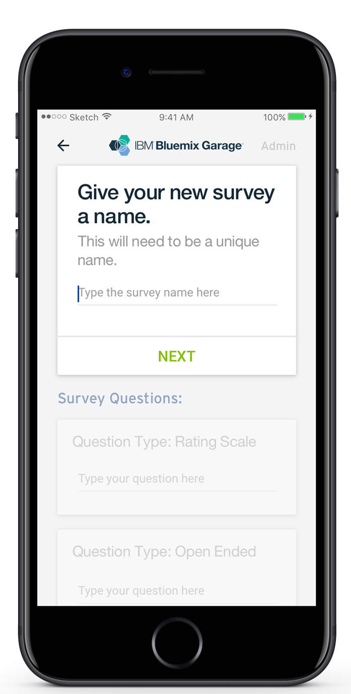
Employees
In our MVP, when an employee followed the unique link from their manager they see the question that the manager set and four emoji that represent Ver Sad, Sad, Happy, and Very Happy. The employee selects the one that best represents the way they feel, then they have the option of filling out a follow up question. When they submit their response they see an overview of all the other responses.
Outcome
Our client was energized by the whole project and was so eager to test out the app that our sponsor sent out a survey to 70,000 employees, and the traffic initially crashed the app! But we quickly got it back online and our sposor described it as "addictive" and "like checking instagram." I am hoping to add a link to a demo version of this app, so check back again soon!
Brainhub
Role: Product Designer
Type: Passion Project
Duration: Ongoing
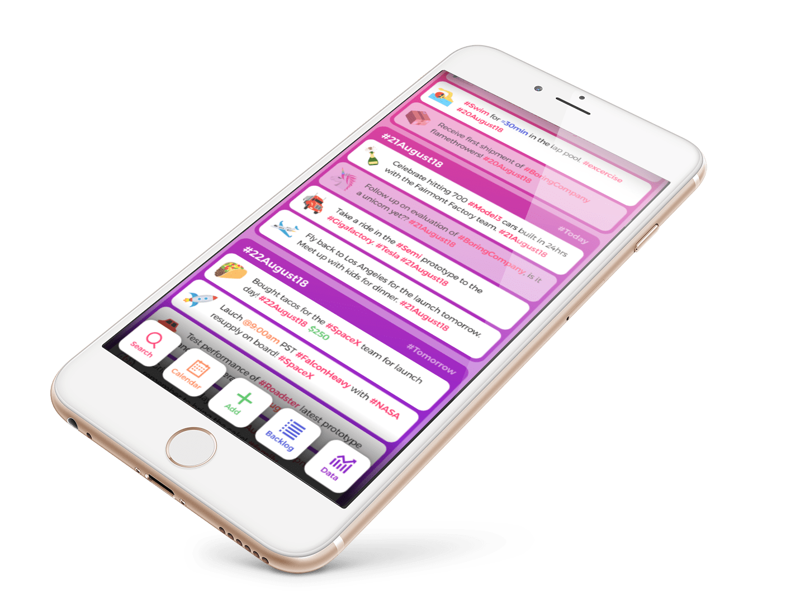
My close friend, a Software Engineer, and I wanted a better system for staying on top of our days and getting insight about our productivity. We couldn't find what we were looking for so we decided to build it. We call it BrainHub
Inspiration
"Wait... what was it that I was supposed to do now?" -Our Brains on a Daily Basis
Problem
Have you ever felt like there's something you should be doing but can't remember what it is? Or have you lost sleep because you could only to think about the things you need to do tomorrow? For me and a couple of my close friends this was happening to me way too often. It is easy to feel overwhelmed by all of the things to remember, tasks to do, and decisions to make everyday.
Post-its only help so much.
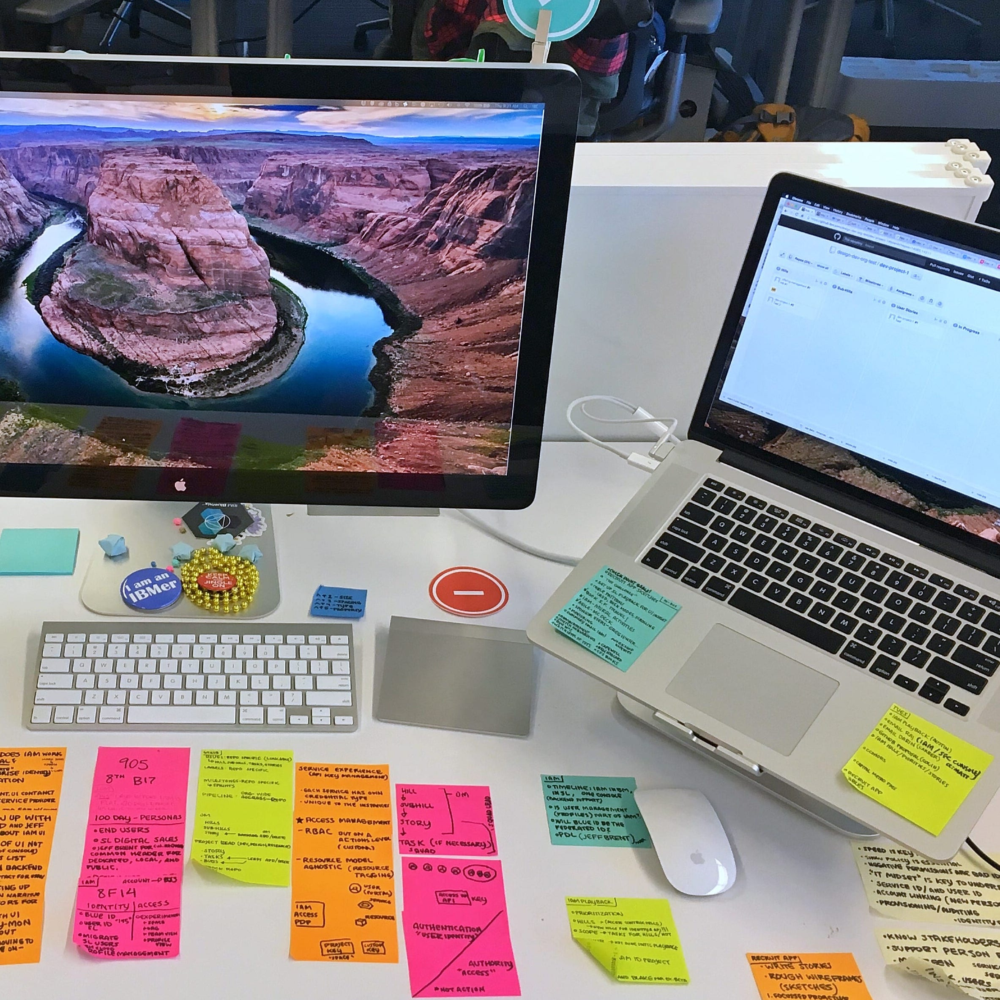
Despite trying dozens of productivity apps, the best system I had found for keeping up with everything was a system of post-its on my laptop, desk, and even phone. But this system took a lot of time to keep up and losing even one of the notes would throw the whole thing off.
Our Approach
Like brushing your teeth, we think taking care of your attention should be a daily habit that helps you avoid more serious problems like burnout. Research suggests simple things like breaking large tasks down and planning when to accomplish tasks can help significantly. In making BrainHub, we focused on making those things easy and sustainable.
Surveys and User Testing
I conducted user interviews and created several surveys to find out how people were handling this problem today. I also asked them to imagine an app that solved this problem, and describe what that app would do.
Evolution of the Mobile Design
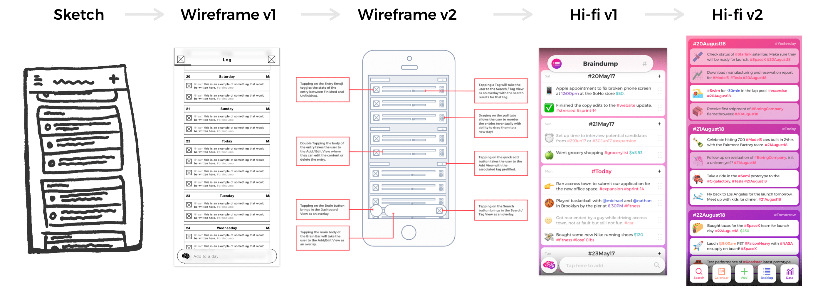
In my initial designs I thought back to my experience using post-it notes and sketched out an interface that mimicked the idea of a digital note for each day. I continued to refine the idea as I understood the interactions that would need to take place and got feedback on the designs from others.
Emoji Signifiers
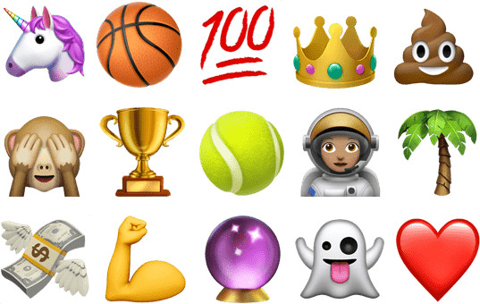
I heard early feedback that entries were hard to tell apart when scanning through the feed. While exploring this problem, I came up with an idea to allow users to choose an emoji for each entry. This quickly turned into one of the most popular aspects of the design!
Process
As the designs took shape, my engineer built the the basic functionality and got it set up with the Apple TestFlight program so that we could all test it on our phones.
Dogfooding It
There's no substitute for experience. The beta improved the way we managed our days, but it also raised lots of usability questions. Even more importantly, we got to see where and when we were using the application. This led to our decision to make a big change.
Platform Pivot
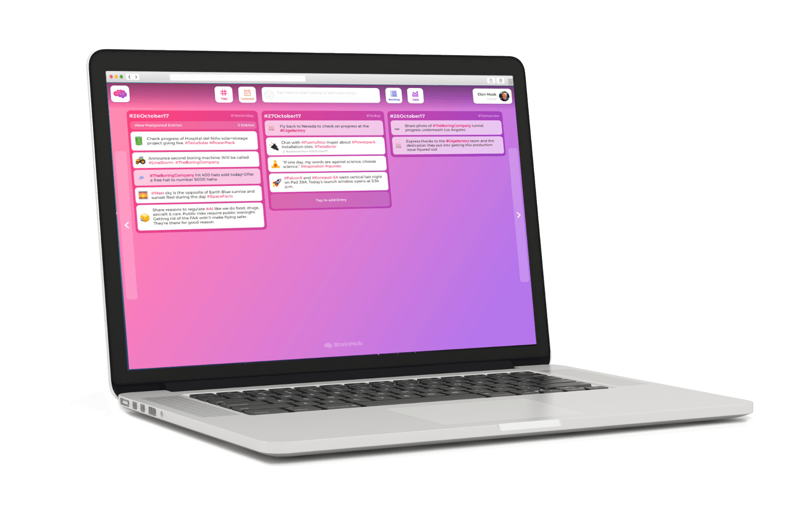
Constantly checking your phone at work doesn't give the impression you're being productive. Also, checking your phone makes it easy to be distracted by another notification or app. We decided to pivot from building a mobile app first to a web app meant for a laptop.
Interaction Redesign
Designing for a new platform changes everything! I started a new design process using motion wireframes to get feedback on some of the transitions and interactions in the new desktop designs.
One Entry at a Time.
In my mobile designs I had anticipated taps, drags, and presses enabling much of the functionality but these interactions don't translate as well to a laptop. The action menu (shown here) performed the best with our users and will enable us to dynamically change the options depending on the context.
Designing for Data
From the beginning, we knew that data would be the key to helping people find the patterns that are difficult to recognize on your own. As we have focussed on enhancing the data captured in BrainHub and we've come to think about it in two categories: Implicit, and Explicit Data.
Implicit Data
What days of the week are you the most productive? What things are you likely to procrastinate? Implicit data describes the context of all the actions you take within BrainHub and can help you answer questions like these. We are continuing to refine the implicit data we capture because you cannot recover this if it is not captured.
Explicit Data
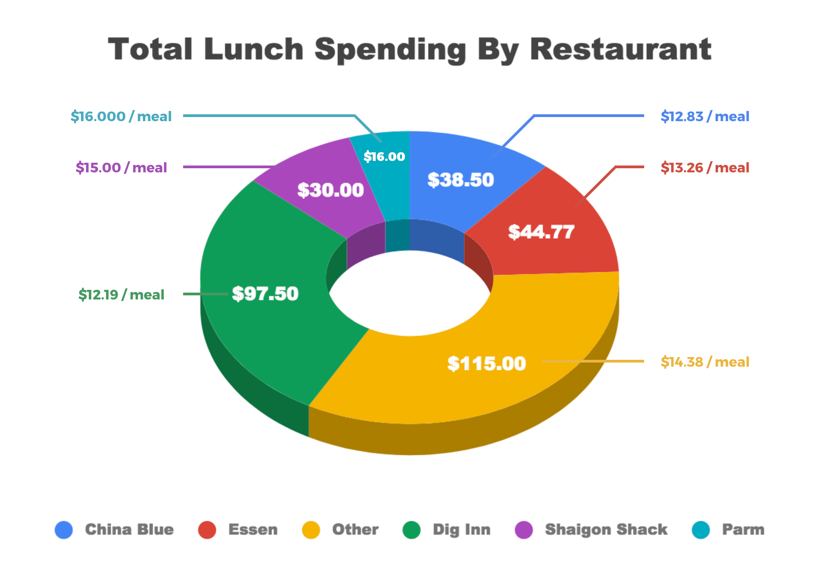
This data you track intentionally to explore an area of your life. We're adding support for a bunch of different data types (money, time, duration, value, etc) so that you can explore anything from your spending habits, to practice, hygiene, or any number of other areas of your life.
More to Come!
We are currently dogfooding the earliest version of the application and sharing it with some test users. Excited to share more soon!
This project is still in progress. Come back again later to see updates!
All Things X
Role: Co-Author & Designer
Type: Culture Project
Duration: 3 Months
All Things X aims to unify the rapidly growing global IBM Studios through the common thread of design driven cultures. The magazine highlights the careers, goals and aspirations of IBMers around the world, celebrating the work and people that contribute to the world on a grand scale.
Our Mission
Celebrate the 55th anniversary of the beginning of the space race, while comparing NASA's process to the iterative process used in software development.
Flight Plan
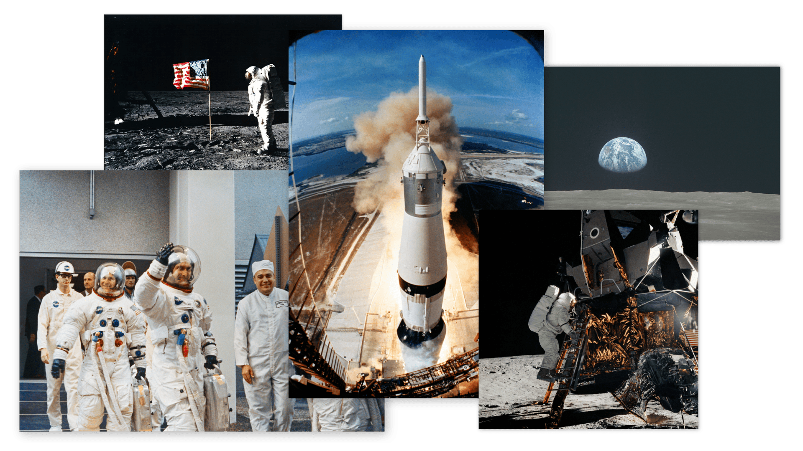
Emphasize the vivid photography recently released by NASA
Just before we began working on this article, NASA released thousands of hi-res photographs from the Gemini and Apollo missions. My co-author and I were really inspired by these photographs and decided to use them to tell the story of our article. It took hours to dig through the archives to choose right photos, but doing so enhanced the experience of writing about the events photographed.
Reference a newly released IBM Thinking branding
Our article would also be following the release of an update to the IBM Design Thinking guidelines. Because our article would be making parallels between modern Design and Development processes and NASA's process, we decided to incorporate reference to the new guidelines into the design of the article itself.
Rollout
Execution
My co-author and I designed and wrote the article at the same time. We did this because we wanted the design and the text to tell the story and to align the design element to what was being written about. As one of the featured articles in the issue, our article was intentionally in a longer format. It took us several iterations to refine text and the designs to complement each other, but the result was a thorough covering of the events that led to the man on the moon along with a vivid journey through the imagery of that moment in history.
Liftoff
All Things X Issue 2 -- Titled "Spaces"
Our article was included in the Issue 2 of All Things X -- entitled "Spaces." Over one thousand were distributed to 21 IBM Design Studios all over the globe. Our issue was featured in For Print Only as well as recognized internally at IBM for design excellence.
I am currently getting permission to post the full article online. I will post a link when it is available!
Claimway
Role: Product Designer
Type: Client Engagement
Duration: 4 Months
This project was my first exposure to the world of real estate insurance. It was a steep learning curve, but I learned to appreciate the impact of the work they do. I also felt proud improving the experience of those effected by natural disasters.
Problem Statement
With an increasing frequency of catastrophic events happening in the US, How can we help field claim adjusters process claims faster and more efficiently?
Use Case
When a hurricane hits Florida, a tornado rips through the Midwest, or any other catastrophe occurs, insurance companies send out field appraisers to process insurance claims. For our client much of the work scheduling, planning, and reporting happens manually today. They were looking for way to improve this system so that their customers could get their lives back to normal faster.
Team
Our team of five spearheaded this project with an additional 3 developers from the client. I supported my lead designer and our technical architect through the early stages of this project before taking over to develop the interface and support the engineering team.
Design Thinking Workshop
During our Design Thinking Workshop we brought together the entire team and the key stakeholders to decide as a group on how we could make an impact for our client and for catastrophic events. We dove into the problem space and identified the pain points that each user faced. We outlined a vision for how we wanted to improve the interaction between Field Appraiser and their coordinators. We came to a surprising idea: give the appraisers the ability to assign themselves to claims directly and take the coordinating manager out of the process.
Users
One of the most important parts of any Design Thinking workshop is aligning around who the users are. In our case there are two direct users, the catastrophic event filed Appraiser and a catastrophic event manager. These users have an impact on a third person, the company's clients, whose experience will ultimately be the measure of success. But for this application, the Appraisers and the Managers are the users to focus on.
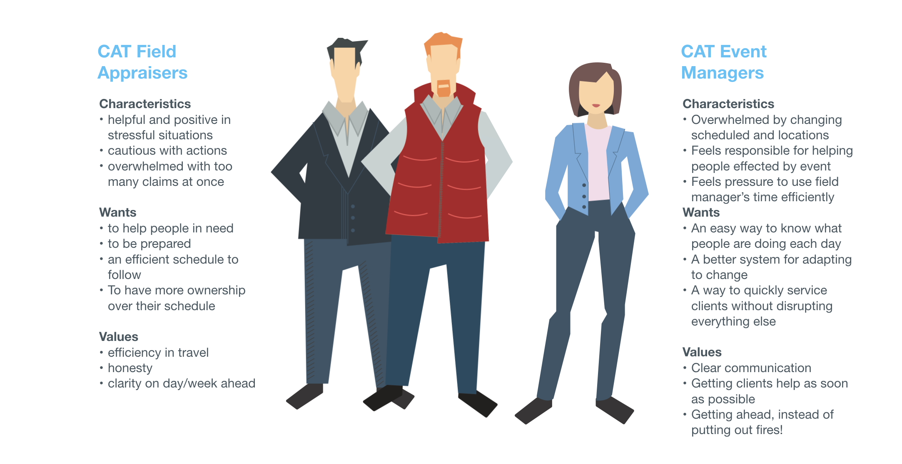
Pain Points and Vision - Appraiser
The biggest opportunity in our problem space was empowering the Appraisers. They are the boots on the ground after one of these events and the faster they are able to process claims, the faster the healing process can take place. By understanding the things that were holding them back we were able to craft a vision for how the application would improve their work.
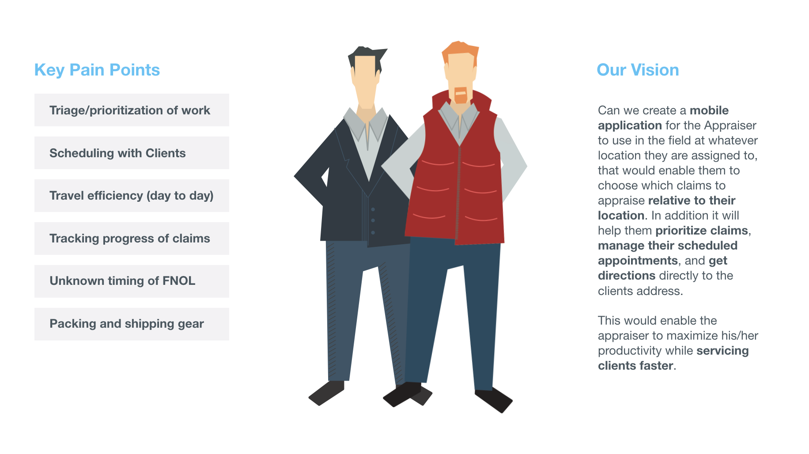
Pain Points and Vision - Manager
The managers currently experience a lot of stress because of the deficiencies of the current system. Today, managing the routes of the adjusters takes the majority of their time, but an important part of their job is ensuring claimants receive service within their SLA. By empowering the appraisers to start to self-prioritize their claims, we enable the managers to focus on those effected.
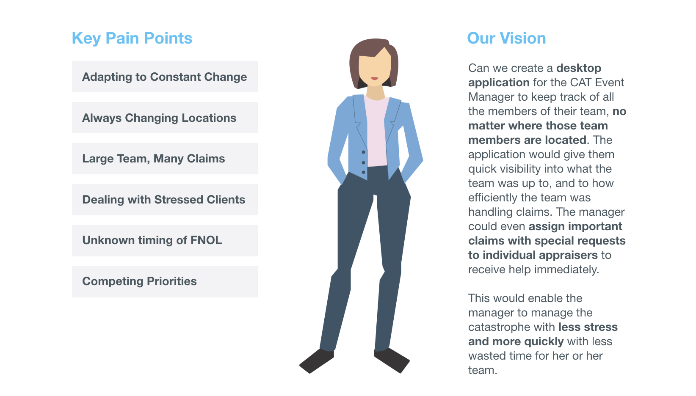
Assumptions & Risk
Underlying our vision for this solution were many assumptions. As a group we discussed them and documented the three that we saw as having the biggest potential risk. For this project, we had assumptions related to the technology, market, and adoption that we wanted to test with our application.
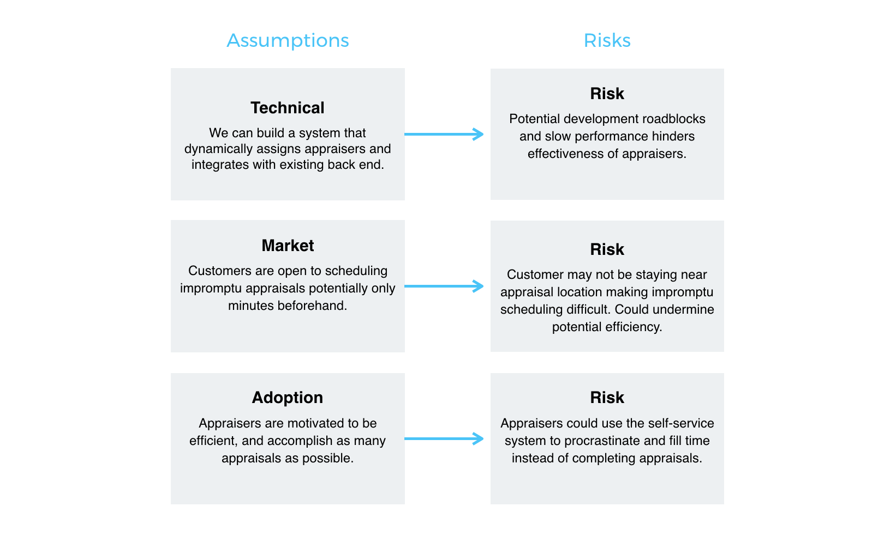
Hypothesis
Finally to understand how we would measure the success of our application, we wrote a hypothesis. The discussion around metrics was interesting because each catastrophic event is so unique there are not a lot of standard measures. But in the end we align around three metric that should indicate that the application is providing significant business value.
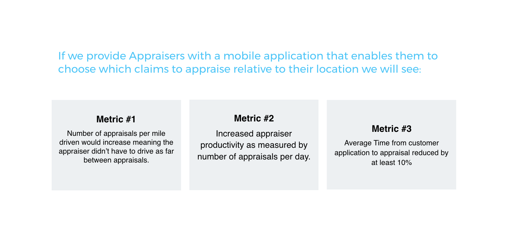
Initial Designs
At the end of the workshop we took some time to visualize the solution that we had talked about. This was a great opportunity to get feedback quicky on the the direction we were headed and to clarify the expectations of our key stakeholders.
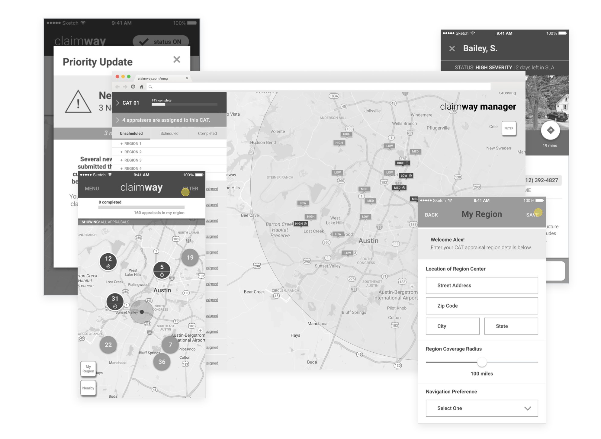
Sketching
As a group we worked on sketching out the screens associated with the vision we had outlined for each of the users. Though it is rarely comprehensive the sketches gave us a great place to start wireframing.
Wireframing
Because this project would include two applications we spent some additional time to wireframe what the solution might look like in greater detail. This helped us solidify buy-in from our Client and accurately staff the project with developers.
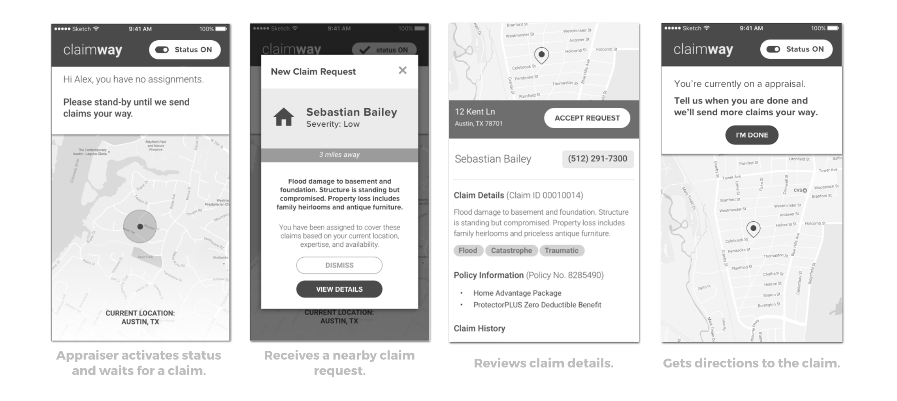
Final Designs
I continued to develop the designs throughout the project. As we learned the technical constraints of the technologies we were using and as we received feedback from our sponsor users and the client's brand team.
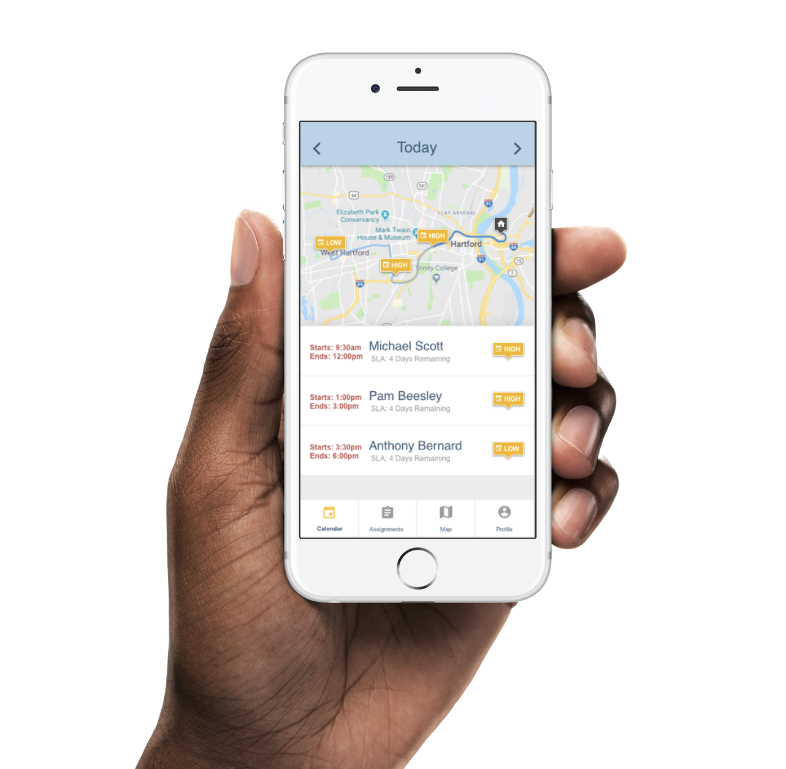
Process
To make gathering feedback and keeping track of changes easy, I created an Invision prototype that the client could access to gather feedback and leave comments on the designs. This allowed us to quickly iterate and adapt the designs as we went along.
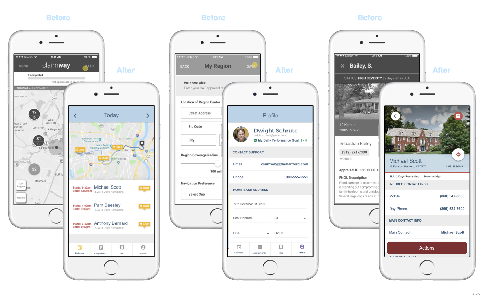
Mobile
The final mobile application was designed to be the go-to tool for appraisers. The could immediately see the appointments they had scheduled for the day when they logged in, and keep track of their daily performance goal. Other sections of the application included a section that showed all of the scheduled appointments with clients and a section that displayed the assigned claims from the manager. Finally, the appraiser had access to a map that showed them where the nearest claims were so that they could maximize their time in an area. The appraiser could drill down into and claim, and get the relevant information within the app as well.
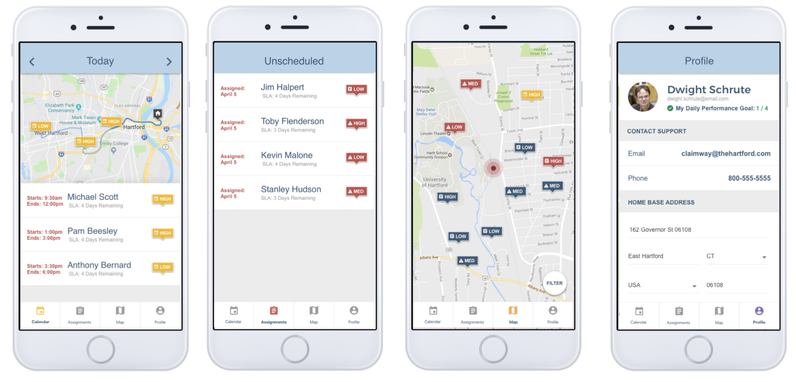
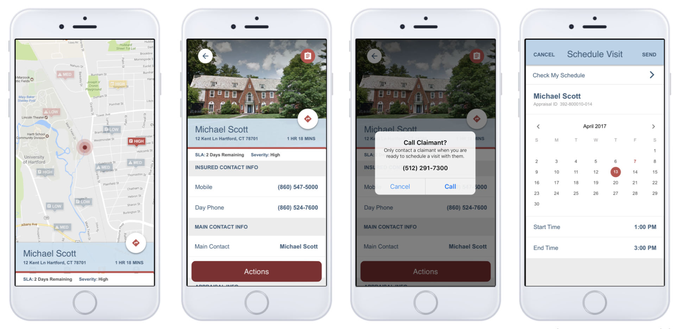
Desktop
The desktop version of the application was built for the manager and allowed them so see across all of the members of their team, see what appointments they had scheduled, and make direct assignments for the claims that need immediate attention. The manager can also evaluate the overall progress of a CAT event and move their Appraisers around accordingly.
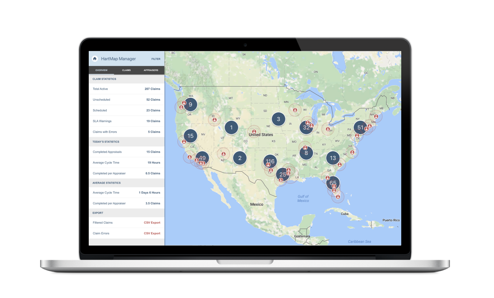
Outcome
Our client piloted our application shortly after we finished development. The initial feedback they got was very positive! They are currently looking into training all of their appraisers to use the application and plan to use it during their catastrophe response across the country.
Supply Chain Management
Role: Product Designer
Type: Client Engagement
Duration:3 Months
A large US Bank asked us to help their enterprise supply chain team to manage their data center inventory. My team consisted of 8 engineers, a product manager, myself as the designer. Upwards of 20 people involved as stakeholders, experts, or sponsor users.
Problem
The Bank can’t accurately predict delivery of an order because the order’s progress through the vendor process is not transparent. The problem ripples through the organization causing unnecessary communication overhead and delaying product development.
Research
Approach
I led a design thinking session that was attended by the different members of the enterprise supply chain team. Through the creation of empathy maps, current state journey maps, and a “big ideas” brainstorm, we gathered an in-depth understanding of our users, their pain points, and a conceptual idea for a solution.
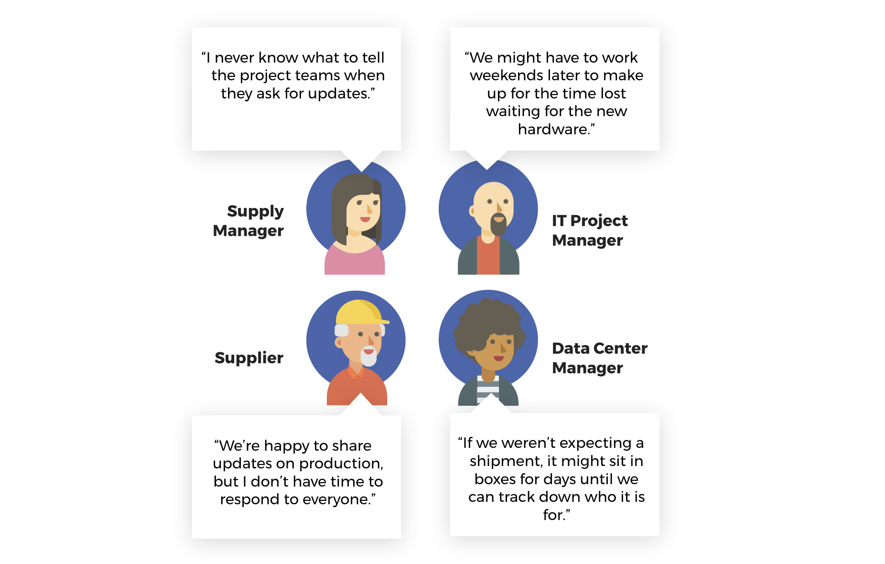
Users & Pains
Each user struggled with issues that were specific to their role, but they were symptoms of a higher-level problem: Nobody knew what anybody else was doing!
Big Idea
At one point during the workshop someone said: “Can’t we have the ‘Domino’s Pizza Tracker’ for our Purchase Orders?”
Design Process
Journey of a Purchase Order
Working with our product manager, I mapped out the PO process. My goal was to illuminate this process for everyone so each user understood how they fit in.
Wireframe Evolution
After many interviews with each of the four users, I finally landed on a flow that met The Supplier’s needs. As it turned out, his problem wasn’t so much that he struggled to fulfill orders, but rather that continually providing status updates to the gazillions of requests he got took up most of his time!
Final Designs
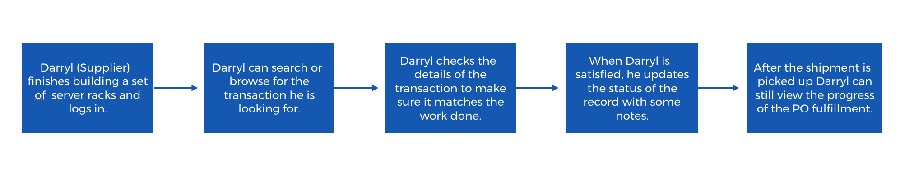
Workflow
For this piece of the design, I focused specifically on Darryl, the supplier, who is continually bombarded with requests for status updates. His motivation is to spend less time responding to those requests so he can dedicate more time to fulfilling orders.
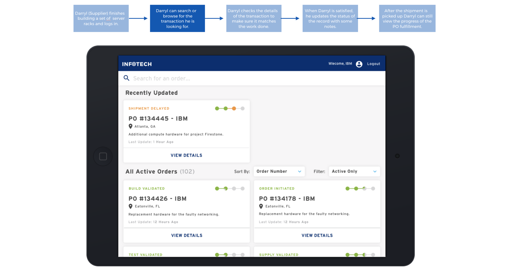
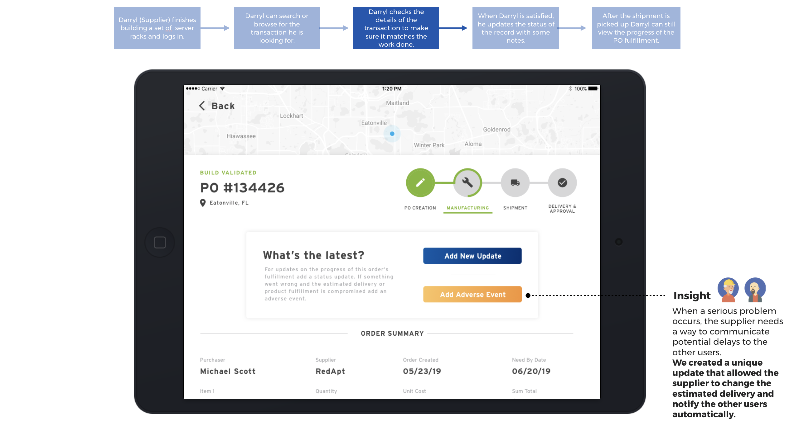
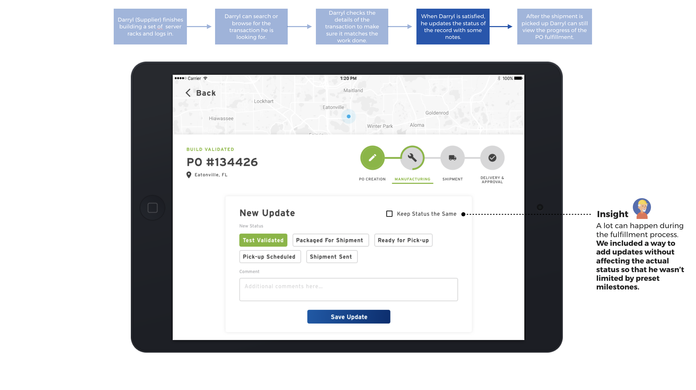
Design Details
Visual Guidelines
Our client didn’t have a design system, so part of my work involved developing one for them based on their branding.
Status Graphic
As I designed each component, I looked for opportunities for continuity. For example, the order progress indicator on the order overview page visually translates to the larger, more detailed progress indicator on the order detail page. A user should feel as though they are looking at a zoomed-in version of their order that provides add’l guidance.
Details View
Here is a breakdown of each section of the order details page. The most common questions our users were looking to answer by using this tool were questions like "Where is my order?" or "When should I expect delivery?" This drove the order of information in each section and the order of each section on the page.
Outcomes
Successes
In the first few weeks of testing the application it eliminated status inquiries! In addition to that both the IT Project Manager and the Data Center Manager mentioned that they used the application to plan better.
Challenges
We uncovered more complexity than anticipated as we started standardizing the PO process. This strained my design pattern for the visualization. Also some updates that should be automatic for the Supplier were still manual.
Starman
Role: Creator
Type: Side Project
Duration: 9 Hours
As a designer I have always felt the best way to learn a new technique or software was to jump in and start using it. After getting early access to InVision Studio, a motion design tool, I created this project to teach myself the tool and develop my understanding on motion design.
Inspiration
"Crazy things can come true. When I see a rocket lift off, I see a thousand things that could not work, and it's amazing when they do." - Elon Musk about Falcon Heavy
Designs
I began with the idea to simply animate the liftoff stage of the Falcon Heavy rocket. But designing the rocket took me back the moment I watched the launch live and I decided to not only animate the liftoff, but all eight stages of the launch. Though challenging, the complexity of these eight steps gave me the opportunity to really explore the tool and its settings.
Details
To further challenge myself with this new tool, I added key details to the rocket, car, and starman. This also really enhanced the experience of viewing the animations. A few of my favorite details in this project were the rocket's plumes, and the car's hub caps.
Process and Animation
In addition to walking through the final product, this video condenses all nine hours of design work I did for this project. You will even see my initial preparations for the single stage version before deciding to go ahead and create the full eight stages.
Response
After sharing the video of my project, I got a great response on social media. The CEO of InVision along with many members of the team that created the Studio application responded with very positive reactions, and even reached out to get access to the working file so that they can use it to inform future development. I hope you enjoyed it too!


 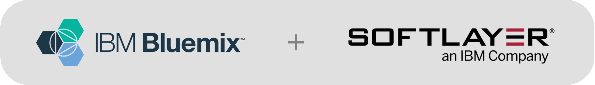
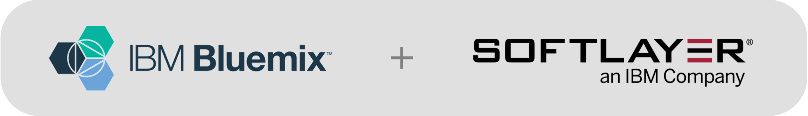


 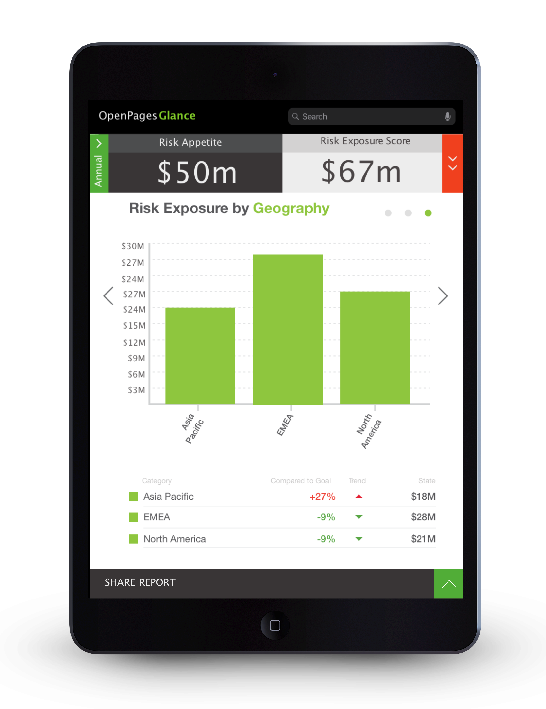
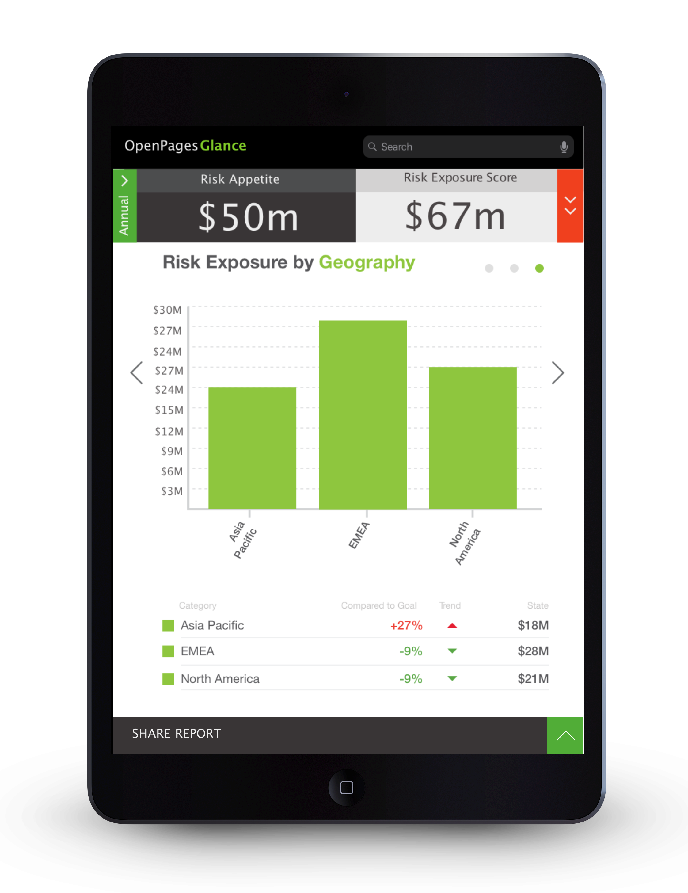